O mundo divido entre naturezas, águas e magias antigas, o mundo forçado a linha de origem de um santuário antigo e benevolente de estruturas antigas de suas passagens escritas no livro místico da linguagem das 14 runas geralmente associadas as emeraldas do caos como idioma.
Tudo era questão de tempo até que rolasse algum evento catastrófico para todos bem, foi assim que sobre isso tudo se inciou com leve problema para um grande problema vindo diretamente do mundo tudo se direcionou a estrutura antiga de uma ilha mal descoberta chamada
dark corrupt island
.
Dark corrupt island
Uma ilha logicamente cheia de corrupção e alguns fragmentos de pela joia que infinite tem, bem tudo que foi feito causou em progresso problemático por algum cientista sem noções do que ciência faria com o local, maior parte das criaturas são feita pela runa
trevas + profuno
, aparentam se artificiais por lógicas robóticas e outras apenas com núcleos de
Trevas
.
Quando sociedade ficou sabendo o desespero se alarmou de forma rapida, como uma fofoca entre número grande, mas era um aviso supostamente tomado ligeiramente por todos que iriam morrer, claramente que acreditavam no heróis poderiam salva esse mundo.
Claramente tudo foi por água baixo pela maldades de Aedyn, de forma canônica sua morte foi o grande alívio, mas ninguém ficou sabendo de seu experimento com invocação por meio das runas
Time, Imaterial, Fogo, Natureza, corrupção de uma joia, palavra amor descrita nas runas e trevas
Seu projeto ficou uma incubadora por 3 anos que foram suficientes para fazer telo vida dando vida algo que nunca pode se visto ao olhar humano, normalmente era rápido demais para próprios olhos de um humano comum, porém antes disso verdadeiro apocalipse estava a diante.
Os monstro como humanos acreditam ser dando diversos apelidos, mas o nome original era
Morogs
.
Foi tudo que era de espera por primeiros passos por Kan um militante das forças de Guerras, dando o início de origem contra as feras feitas por Cryptic Craig que levou quase a morte toda humanidade, por meio daquela batalha do própria terra, porém o que tinham dinheiro foram salvos disso, mas sua salvação veio com um prejuízo próprio que era apenas pensarem em si mesmo em vez de salvar a humanidade.
Sobre monitor de Tails a transmissão foi enviada, curiosidade tomou conta dele, quando via a transmissão era alguém semelhante a ele dizendo sobre pedidos de socorro, mas o sinal era ruim devido que transmissão não foi enviada em sua qualidade original, Tails percebeu que o sinal estava tentando chega alguma forma on-line, mas não daria certo se fosse continuar usando algo que não chega-se perto do nível da transmissão.
Sonic estava comentando com resto da equipe sobre um portal de forma estranha aparecido ao Sul de Green Hill no final da ilha, era um caso em tanto.
Alguns acreditam que o antigo vilão feito por nega eggman estava de volta, mas eggman não estava nessa situação parecia que até ele mesmo queria saber a fonte por trás desse portal, outro lado era um mistério não descoberto, mas questão sobre que refugiados de uma ilha distante tomava cenário de notícias no outro mundo rolava.
Apenas havia uma pequena equipe de runaptos que eram Grayfury, Nicklespear e Dreamwound, porém tiveram sua forças pronta para batalha, segurando os inimigos por 1 mês, antes sua pôrces sobrasse lembranças de seus antigos tempo de amizades com fragmentos de lembrar de quando eram crianças, cada lançando o power trip grifo, quando sorriram com evacuação acontecendo seus últimos momentos de pedidos de socorro antes de seu livros mágicos serem queimados em cinza junto de sua arma por sido derrotado por
Boss Morogs
.
Rapidamente depois de uma semana pequena existência de vida estava sobre viajem no espaço, foi assim que iniciou a grande guerra do militares liderado pelo Kan que morreu com seus companheiros sabendo que estava lidando com inimigos que eram mais imunes a balas do que pela armas feito por alguém que ele mesmo odiava.
━━━━━━ ◦ ❖ ◦ ━━━━━━ ◦ ❖ ◦ ━━━━━━ ◦ ❖ ◦ ━━━━━━
Corrupt Earth
Quando a terra já havia sindo tomada por 80% foi transformado, numa nave no espaço estava alguém constante triste por perder seu lar de origem.
Morogs
São criaturas invocadas por Aedyn que eram runa da trevas e sangue, origem eram criaturas malignas com estado de alimentação necropsia que sabe se alimentar de mortos qualquer relação a parte porém são exageradamente agressiva quando perturbadas, porém o Cryptic Craig tomou uma como experimento artificial que levou a morte.
Os sinais apenas eram um fragmentos do que eram das chamadas de ajuda, acreditam Sonic e Tails que o local foi morto, em suas buscas levemente deparam com inimigos de origem não tão boas eram caóticas e exageradamente ligadas com atitudes violência pura.
Quando tudo foi nas notícias de mettaton em NeworldTale, fortemente todos monstros e humanos ficaram preocupados, mas não sabendo que seu universo não seria atingido por isso apenas seria uma história em suas telas tecnologias.
Sonic e Tails acredita que pelos momentos que atingia aquele mundo seu próprio seria o próximo de algum modo será o tudo caótico por essas criaturas inventadas, nada seria afetado no mundo de Sonic por não ter rastros de energia das mesmas runas do santuário antigo que guardava o verdadeiro apocalipse dentro de suas energias.
Quando tudo estava sendo pedido no olhares do outro mundo com últimos sobreviventes apenas no espaço escuro alguém observava dessa origem dessa história sobre tudo.
Apenas com frases de origem dizia no livro das runas
❝
O fogo da serpente vai acabar em escuridão das lembranças do demônio final pelo seu genocio
❞
Sobre terras daquele planeta tudo guiado pelos
Morogs
, devagar todos levaram humanos a morte espalhando seu vírus que não conseguia fazer humanos pós essas criaturas não tinham dna humano, se existe uma possibilidade de um vira um
Morog
será morto em 1 hora, pós preciso de núcleo runar e sem isso
Morogs
morrem, poucos humanos ainda vivos procuram por abrigo enquanto o caos eram passageiros seus olhares acreditam que morreriam virando estrelas (
Uma metáfora para o além
).
Quando sorrisos tocavam seus olhos estavam de um raposo na nave todos cair sem vida do planeta, Sonic e Tails, com forças prontos guardam as transmissões distorcidas por falta de frequência de envio, quando tudo foi resolvido o grupo do time do Sonic acreditam que poderiam resolver os problemas de
Morogs
━━━━━━ ◦ ❖ ◦ ━━━━━━ ◦ ❖ ◦ ━━━━━━ ◦ ❖ ◦ ━━━━━━
Corrupt Origens
Quando tudo foi direcionado para o mundo de Sonic o portal estava preste a despir em pedaços de fragmentos de simplesmente de corrupção de espalhando num raio daquele portal ficou apenas ficou sobre isso até momento que time que tiveram lidar com inimigos mortais que podem muito bem mata qualquer humano na fase da terra sobre o mundo de corrupção foi totalmente história, porém a equipe mais forte teve luta pela suas atitudes querendo ou não tiveram escolha em ter luta contra os
Morogs
.
Estrelas no tempo foi tudo que simplesmente deixaram lembranças no final disso tudo está direcionando a sensação com força de determinação da equipe para defender sua origem de tudo que poderia decair sobre suas terra de origem, enquanto águas desciam como dias quente de verão, os dias de luta passaram diante disso Sonic estava lutando pela suas forças por mais que Super form fosse uma forma úncia no ouriços, Shadow tirando seus anéis não de tevês mesmo assim, Amy tendo a força sobre humana liberada lidou apenas com quantidade pequena dos inimigos parecia que o portal foi apenas história, mas para para-lo de vez tinham que chegar no núcleo que era verdadeiro problema em outro mundo, ninguém se preocupou por não saber a origem dele.
❝
Uma Inari sempre brilha no fim do túnel quando precisam
❞
Enquanto a luta estava em tragédia apenas eles assistindo acreditam que morreriam, os humanos do mundo de Sonic, amigos pedidos encheu de ódio Sonic cada vez impulsado pela dor a sensação de ódio inimigos foram atacado, mas mesmo pareciam que as criaturas eram fortes uma hora isso quase causou a verdadeira destruição das esmeraldas do caos, porém uma ajuda estava longe de verdadeira mente para salvar todos

〘
Runa do fogo origem com as palavras
amor, compaixão, raiva
e
ira
〙
〘
Runa da treva origem com as palavras
ódio, solidão, morte
e
cego
〙
Lentamente as lutas foram apenas memórias na mãos de todos, enquanto choros tocavam, uma nave caiu com força sobre o chão distante onde Tails viu um raposo inconsciente ao seu lado era Amy que levou com suas últimas forças pelo bem de alguém de fora enquanto tudo andavam de forma geral Sonic, Shadow e Silver lutando pelo mundo tudo estava de forma que luta passava ser intensamente cheia de lágrimas poucos que foram mortos não poderiam viver novamente pelas mãos de Knuckles que estava enfraquecido quase na beira da morte, Tails estava estudando o livro, mas não entendia o idioma sobre escrito.
〘
Runa da natureza origem com as palavras
crescimento, cuidado, bondade
e
primitivo
〙
Sobre semanas passando em termo tudo foi debilitado fisicamente os lutadores que estão erguidos pela justiça de defender esse mundo, sendo aos poucos tomado por
morogs
〘
Runa da natureza origem com as palavras
corrupção, necropsia, sangue
e
genocide
〙
Tudo que lembrava o mundo de Sonic sobre águas tomada pelo fogo ardente de seca, deixado de sobrevivência que era apenas poeira de origens de tudo que era bom, mas não teve mais vida, no laboratório de Tails cuidando do raposo inconsciente por horas de tudo foi apenas horas durante o desespero de cada um.
O tempo que passavam em minutos pareciam apenas horas pela mente de todos durante a luta pela crença que cada um carregava sobre melhor de tudo, apenas eram ditados, mas as forças militares da lei entre os humanos se juntando para luta, porém Eggman em seu egoísmos foi sozinho para o espaço quando viu brecha levando filhote de
Morogs
apenas uma criatura fraca fácil de matar porém o cientista maluco apenas queria ganhar todo custo acreditando que se tudo for como realmente acredita podeira vencer tudo sozinho até mesmo Sonic veria seu verdadeiro potencial.
〘
Runa do Tempo origem de palavras com
Tempo, paciência, espera
e
serenidade
〙

〘
Runa da água origem de palavras com
calmo, triste, confiança
e
empatia
〙
━━━━━━ ◦ ❖ ◦ ━━━━━━ ◦ ❖ ◦ ━━━━━━ ◦ ❖ ◦ ━━━━━━
Lágrimas de heróis
Acreditando que tudo era um começo de destruição de origem sobre tudo lágrimas caíram pelos gritos dos heróis pediram por esperança suas atitudes de luta diminuiu cada passo, porém o desconhecido movido pela luz despertou sua super forma diante das runas parecia uma inari que convocava diversas magia durante a batalha sobre sorriso, o mundo onde Kan lutava morreu com seus amigos e heróis deixando sobre tudo apenas lembranças do raposo que seu verdadeiro potencial nesse apocalipse de
Morogs
, quando tudo parecia cada vez impulsionado pela dores do que ja conheceu pela família e amigos de origem de seu planeta como fragmentos de lágrimas de lutas que serão anos de lutas pela mortes e lembranças carregada de coragem pelo defensor com dores de um guerreiro com uma grande frase para levantar sorrisos tangíveis diante o brilhar de uma frase:
❝Todos
podemos
ter nossa
luta
nas luzes das
raposas
❞
Quando clima escureceu tudo passou horas diante disso sobre chuvas os momentos de luta ficaram como uma arena de guerra entre
Morogs
e Sr. Raposo, porém mesmo com as adaptações das runas ainda era incapaz de enfrentar
Morogs
os seres artificial vindo de núcleos de runas, justamente de origem própria com grande questão de tudo um pouco, as vezes preciso se guiado por luz de suas determinação sobre acreditando que poderão melhora o mundo, foi assim que criada uma
Team nova
👟 Sonic e Shadow
🪽 Tails e Silver
💪 Knuckles
🪄 Sr. Raposo
Todos em um estado semelhante ao todas formas, mas era uma transformação completa o estágio de runas 1 que estão absorvidos pelas runas do templo.
Estados Runares
Com um grande grito ativaram as verdades das runas carregadas com uma história de maldades.
Porém a luta foi totalmente direcionada em Green Hill, que levou o local a uma origem de tudo que acabou em sorriso por sua forma de runa que salvaria Green Hill e outros lugares, acreditando nessa luta de diligência pela libertação de vencer os inimigos que poderiam acabar com inimigos, os climas de tipos de temperos sentimentos cada momento procurava estava esperando pela luz do momentos de acabar os conflitos desse problemas.
Brilhos de Estrelas
Na tela de New⭐rldT❤️le
Na telas universal durante análise de algo viral de luta cheia de
esperanças
e euforia enquanto via acreditando que tudo irá acabar porém a transmissão não era das melhores, mas o lado bom que certa dedicação W. D. Gaster poderia enviar para todos por envia as transferências de forma fluída, tecnologias vindo de outro espaço sideral poderia ajudar muito.
Sobre tudo maior a luta estava preste em mão, mas a determinação de todos estava a frente sendo carregado pela tecnologia diante das runas, porém agora era outro mundo para salvar, Green Hill estava em paz por um tempo
〘
Runa da Luz, origem de palavras com
esperança, inocência, sonhos
e
pureza
〙
〘
Runa do Gelo, origem de palavras com
frio, perfeito, calculista
e
razão
〙
Eggman esteve sobre o espaço com criatura dos Morogs sorrindo o quanto sua pesquisa andava porém um dia irá levar a beira da loucura, seus objetivos estavam igual de Aedyn e Cryptic Craig, origem delas tem Cryptic como mestre um psicopata das loucuras de maldade que dominou para luta militar contra Kan, mas acabou em morte junto, Aedyn foi apenas mais um cientista que caiu na loucura da ciência natural das runas, enquanto a paz estava cheia de esperanças, o portal se
abril
...
Era tempo de colocar em prática tudo que era liberdade de todos no mundo de corrupção (
dark corrupt island
), sobre entrada do portal era visível a luta com punhos com poderes de luta para cada momentos para fluir sobre defesa por tudo que querem a luz.